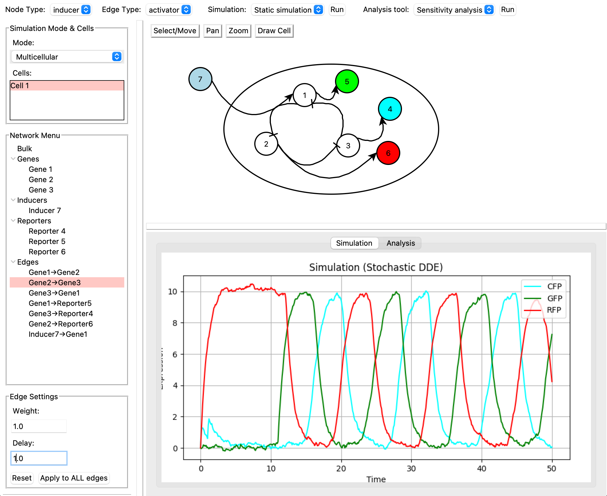

Genetic Circuit Simulator
A powerful desktop application for modeling and simulating gene regulatory networks with an intuitive visual interface.
Key Features
[Visual Network Editor]
Drag and drop interface for creating gene regulatory networks with genes, inducers, and reporters.
[Real-time Simulation]
Live simulation with deterministic and stochastic modes for accurate biological modeling.
[Advanced Analysis]
Sensitivity analysis, bifurcation diagrams, and nullcline analysis for deep insights.
[Multicellular Support]
Model complex multicellular systems with cell boundaries and intercellular communication.
[Customizable Parameters]
Fine-tune gene expression parameters including production rates, degradation, and leaky expression.
[Interactive Plots]
Dynamic plotting with zoom, pan, and export capabilities for publication-ready figures.
Download
Get started with the Genetic Circuit Simulator today.
About
The Genetic Circuit Simulator is a desktop application designed for researchers, educators, and students working with gene regulatory networks. It provides an intuitive interface for modeling complex biological systems and understanding their dynamics.
Built with Python and Tkinter, the simulator offers both deterministic and stochastic simulation modes, making it suitable for a wide range of applications in synthetic biology and systems biology.